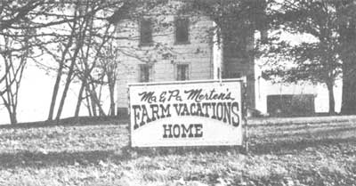
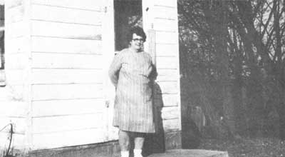

There was a time-not too long ago-when almost every city dweller had a "country cousin" (aunt, uncle, grandparent) living on a farm to which the urban relative could retreat for a relaxing and inexpensive vacation. In most cases, the exchange was a good thing all around. The town-reared children got their chance to milk a cow and jump in the haymow, and their parents were usually glad to pitch in and help with the chores as a welcome change from their sedentary occupations. To the farm family, the visit meant not only help and encouragement with their work but also the stimulation of news and conversation so often missing in the lives of semiisolated people,
Times have changed, though, and this picture has altered greatly in just the past two decades. The percentage of our country's population living in urban areas has increased so significantly that few now enjoy the luxury of country kin. This situation-regrettable as it is in many ways-offers a fine opportunity for people with farms to make some extra money and do their city neighbors a favor at the same time. The name of the game is farm vacations.
The business is simple enough: A farm family plays the role of country cousin to city visitors (usually another family). In return for the hospitality, the guests pay a fee high enough to cover all their expenses and still give their hosts a tidy return on their investment of time and effort.
If you think it sounds mercenary to share a way of life in return for cash, consider for a moment the visitors' point of view. The average middleincome American family spends hundreds of dollars annually in its two weeks' pursuit of pleasure and relaxation. The vacationers lay out their money on camping equipment, special vehicles, boats, motorcycles, gasoline, motels, restaurants, camping fees, portable TVs, movies, liquor, repair bills . . . and usually aspirin, Tums and a few medical expenses besides. They emerge from the ordeal as tense as they began, with no alteration of consciousness and little to show for their outlay beyond a roll of snapshots.
In contrast, a farm vacation-at almost any price-is a true bargain. In a peaceful country setting the city guests will be able to really "let go" for a while, to participate in some genuine earth-oriented activities and eat wholesome home-grown food. And most important of all, the kids won't be bored to death all the time looking for something to do. No, there's no reason to feel that there's anything mercenary about the farm vacation business.
Herbert and Frances Merten live in a simple, comfortable old farmhouse on 80 acres, four miles from Hart, Michigan. "Ma" and "Pa" Merten have raised a large family, all of them grown and married now. So many of the children have settled nearby that the gravel road which links the clan is sometimes referred to as "Merten Road". In fact, it was one of Ma's daughters-in-law who first thought of the idea that eased the aging couple's financial situation and started them out in their modest but profitable home business.
Three years ago, the elder Mertens faced a bleak outlook. Neither was in good enough health to make a living from the farm alone. Ma then took a job in the canning factory which kept her standing all day and made her medical problems even worse. There seemed to be no satisfactory solution ... until the enterprising daughter-in-law suggested taking in guests for farm vacations.
Ma was ready to try almost anything that offered her a chance to stay home and get off her feet once in a while. As added encouragement, the nearby children promised to help her with cooking and cleaning whenever she needed a hand. And the grandchildren volunteered to entertain the youngsters of visiting families. Accordingly, with a minimum of preparation, the Mertens started a home business based on warmth, friendship and good home cooking.
Ma Merten placed a couple of strategic advertisements, made ready the three upstairs bedrooms and eventually hung out a neatly painted sign to aid guests in finding their destination. Otherwise the farm is much as it always was, with cats lolling on the back stoop, chickens wandering in the yard, machinery scattered about and cows making their daily pilgrimages from pasture to barn and back again.
How successful have the Mertens been? Here's what Ma has to say: "Well, you can't make a living at it, but it helps, it sure does. I've thought about putting an ad in the Detroit paper, but I'm afraid it'd bring me more business than I want and I'd have to start turning people away. I don't want a lot of folks here all at once, and I don't want guests all the time. I like to have a break in between, a chance to stop and think things over ... so I don't care to be too successful. I think I'm getting all the visitors I want right now."
The supply of potential customers for farm vacations seems, in fact, to be just about unlimited these days. A family who decides to go into the business can probably have as many customers as they want, provided their rates are reasonable. So, if you happen to be a farm (or ranch) owner looking for a way to supplement your income, why not give some serious thought to paying guests?
[1] Location. Your first requirement, obviously, is a piece of ground away from the urban scene ... the farther away the better. Don't worry that location in an isolated area will be a drawback. Matter of fact, it'll probably be an advantage. (Vacation businesses are now thriving in Alaska, Canada and all the Western States.)
Although most people travel by auto, those who don't can be called for at bus and train stations. And if your home isn't accessible by car, that's still no problem. Arrange to meet your guests and pick them up in whatever way is necessary ... jeep, horseback, covered wagon or boat. Chances are they'll be delighted with the adventure.
[2] Accommodations: lodging and meals. The accommodations you offer will depend, of course, on what you have. Some people take in guests and provide them with little more than camping space. A number of ranches put visitors up in bunkhouses with old-fashioned privies. At the Merten home (and this is probably one of the more common arrangements), the guests are assigned to upstairs bedrooms and share the living room and bathroom with the family downstairs.
As you can see, there are no rules about the kind of amenities a farm vacation host must supply. What's important is to be completely honest with your prospective customers about what you are offering them, so that they can decide for themselves if this is what they want and come prepared.
You can either provide facilities for guests to cook their own meals, or do the cooking and let them eat with you. The second arrangement is probably more appealing to the visiting wife or mother because it gives her a break from the daily routine of meal preparation and dishwashing.
Ma Merten does the cooking herself and serves her company in the dining room or large kitchen. The guests have breakfast whenever they want it, a noon meal at 12:00 and supper at 6:00 with plenty of cookies, snacks and coffee available at any time. The atmosphere is not pretentious but is very comfortable, and Ma says she's never had trouble pleasing anyone's palate.
[3] Attitude. The third requirement for a successful farm vacation business is personal: You must really enjoy meeting new people and having them near you in pretty close contact ... especially children, since families with youngsters are the most frequent candidates for this kind of vacation. Small fry of your own are a definite advantage because no one can introduce a child to the secret delights of the country as well as another child. And while the small fry are building tree houses or pursuing tomato worms, the parents can relax instead of trying to think of ways to entertain them. No wonder they like farm holidays!
Each visiting family will present an entirely different experience, and it may take a little extra congeniality to get along with all of them. Probably anyone who goes into the business solely to make money will eventually abandon it, because being a host is a personally demanding venture. If, however, you approach the experience as a cultural exchange-if you fully expect that the ideas, politics and lifestyles of your guests will differ from your own, and if you enjoy the contrasts that result from such a meeting-then there's a pretty good chance that the visit will be rewarding for everyone.
So--if you've got that piece of land, some room to spare and a lot of brotherly love-you're all set to play Farm Vacations. It's just a matter of working out the details.
Mrs. Merten told me that over 75% of her business has come through one advertisement placed in a publication called Farm and Ranch Vacation Guide (Farm and Ranch Vacations, Inc., 36 East 57th Street, New York, N.Y. 10022). According to my last information, the next issue will be published in January of 1974. The cost of an ad is $75.00 ... but, to judge from Ma's experience, it should be a worthwhile investment.
While you're waiting for a listing in the Guide, you can get your business started by placing an ad in the local visitor's handbook (if your area has one). Let the chamber of commerce know that you exist. Advertise in the classified section of the newspapers that serve the nearest large city or any area where you think your potential customers might be living.
When you start getting inquiries from prospective vacationers, it's time to be specific about exactly what you're offering. You can save work by having a form letter printed up with detailed information on the following points:
[1] Accommodations. As I've mentioned, the range of amenities covered by the term "farm vacations" varies tremendously. Tell your potential customers what they can expect at your place ... single or double rooms, private or shared bath (or none at all). Can they use your laundry facilities, and do you provide towels and linen? Do you cook and serve all meals?
[2] Children. Are kids welcome? Do you have youngsters of your own, and what are their ages? Will you accept children as guests without their parents ... and if so, how old must they be? Do you have a crib, potty chair or highchair for infants?
[3] Activities. Your visitors will want to know what kinds of recreation are available to them either on your farm or nearby (say within a radius of 20 miles). You can list hiking and picnicking for starters. Then look around your area and see whether you can promise guests the opportunity to swim, fish or ride horses. Is there a body of water suitable for boating, sailing or canoeing? Can they play golf or take a sauna? What about skating and skiing in the winter? Also tell your applicants how extensive your farming operation is and how much chance they will have to participate. And list community activities they might enjoy: hayrides, square dances, bingo parties, county fairs, art shows, fiestas and powwows.
While you're at it, this is the time to mention to your prospec tive guests any activities you would rather they did not engage in while visiting you. Some of these might be hunting, excessive drinking and riding motorcycles or snowmobiles. A tactfully phrased sentence in the letter may help to prevent an uncomfortable if not disastrous situation later on.
[4] Pets. If you have dogs or cats of your own, it's a pretty sure bet that you'll ask visitors to leave their animals at home. If you do feel that you can accommodate an occasional furry friend, make it clear whether the pet will be allowed inside your house or given quarters outside.
[5] It's difficult to set up any guidelines on what to charge, since accommodations vary so greatly and prices are changing every year. Just to give you an idea of the going rates, the 1971- 72 Farm and Ranch Vacation Guide quotes prices that range from $55.00 to $200 for one adult per week ... and it's fairly certain that these figures will have increased with the rising cost of living.
An establishment that charges $200 a week, of course, is not a typical farm but more of a luxury hotel in a country setting. The Mertens-at the other extreme-ask only $65.00 per week for adults and $35.00 for children. When you set the rates for your business, you'll probably be wise to stay on the lower end of this price scale ... let's say not over $100 per week.
Try to arrive at a figure that you feel is fair for both parties. If it begins to look like too much or too little, you can always alter the price for your next season. Ask your prospective customers to make advance reservations and to send a deposit.
After you've received some inquiries, sent out the form letters and waited impatiently, the first actual reservation may come as a shock. Your initial reaction may well be something like, "Ohmigosh, what have we gotten ourselves into?" There's no need for panic, however ... after the first few visitors, the whole matter will become very simple. Remember that it's just the newness of the situation that's throwing you into a tizzy.
Here's an approach that may help you relax: Pretend that the family of some distant cousin (whom you don't know very well) is coming to stay for a week. What would you do to get ready? Well, you'd clean the house a little, put fresh sheets on the beds and make sure that the guest rooms have the proper number of pillows and light bulbs. Then you might eliminate the throw rug that so many people have tripped on, make sure the toilet isn't going to go on strike and locate and eradicate that bad smell in the back room ... just simple measures that will make the visit more comfortable for all of you.
Outside the house, you might want to cover that abandoned well so that no one will fall into it. Pick up glass and tin cans that could prove dangerous, and make sure there's parking and turn-around space for the extra car.
Next, plan a tentative menu for the week and stock up on groceries. At this point, remember that your guests are looking for a change from their city diet ... so don't wear yourself out trying to duplicate what you think they might be accustomed to. Rely heavily on food that you have grown and prepared at home, fix it simply and be sure there's plenty of it.
Most important, while you're preparing for the first visit, don't try to make everything perfect and get all uptight with worry and anticipation in the process. If you do, your family may have a spotless house but aching backs and nasty tempers when the customers arrive. Remember that the visitors' impression of the farm will depend 99% on their hosts. If you enjoy their visit, there's a fair chance that they'll enjoy it, too. Make your preparations at a leisurely pace so that you can all wear smiles of genuine welcome when the strange car pulls into the driveway.
When rural vacationers recall their holidays, they generally mention the same pleasures: the beauties of nature, the clean and quiet air, the chance to forget the pressures of their own lives and participate in the refreshing activities of the farm. For many of the children who stay with you, the visit will be their first introduction to a world entirely different from their own ... one which they've only seen in movies or on TV, or read about in books. For adults, the experience is frequently a trip back in time to their own childhood when they lived in the country, perhaps (or at least lived at a slower pace).
The farm work will have to go on and the guests will simply become part of the scene, helping when they want to, learning, observing and appreciating. Don't hesitate to ask them to get involved ... usually they're eager for the chance. They might especially enjoy projects which include a number of people: adults and children of both sexes. City families don't often have the opportunity of working together.
If you've been a country dweller for a long time, you've probably started to take many aspects of your life for granted ... little events such as smelling your own narcissus as you step out the back door, or walking barefoot to the garden and carrying freshly ripened tomatoes in to the table for a meal. These simple rituals which comprise your daily existence offer absolute delight to a city-bound person, and it's just such ordinary pleasures that your urban cousin wants to share.
So teach your new friends how to milk a cow, show them the newborn kids and give the children the job of exploring the henhouse for eggs each evening. Above all, don't put on any masks. Just be yourselves and relax with your visitors. Share your delights with them, but also your plans, fears, problems and hopes. That's what these people have come for, whether they know it or not: they're after inspiration and regeneration, and they hope to find it through communion with nature and those close to nature. They will-let's hope-go back to their homes refreshed and relaxed, maybe ready to start a window garden or bake some bread.
Viewed in this light, the Farm Vacation Game is a provider of inspiration to city dwellers as well as a welcome source of income for their country cousins. If you'd like to travel but can't get away, you can invite the world to your doorstep. Hang out your shingle, dust off the stoop and make a country pie. Somebody out there really needs your hospitality ... and they're more than willing to pay for it. If you've got some love and a room to spare, why not give farm holidays a try? The world just might become a better place because you did.
|
 |
 |
|